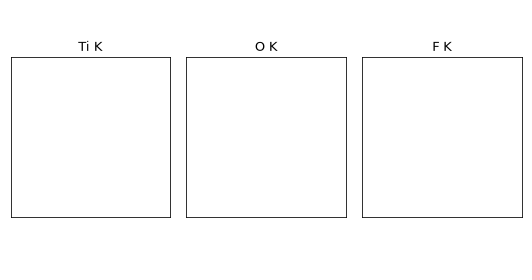

Spectra
EDS
Where each element is, and the formula.
Steps
Add Maps...Add element maps, or open a spectrum image.Thickness From EELS t/λThe thickness from EELS t/λ sets the absorption correction.- Cliff-Lorimer turns the line intensities into atomic %.
Ratio MapA ratio map, such as O/Ti, shows where the flake is oxidised.Terminations: O, F and Cl per Ti3C2 formula unit.
How it works

Worked example
Ti 60, O 25 and F 15 at.%: per 3 Ti, O = 3 × 25 / 60 = 1.25 and F = 0.75, so Ti3C2O1.25F0.75.